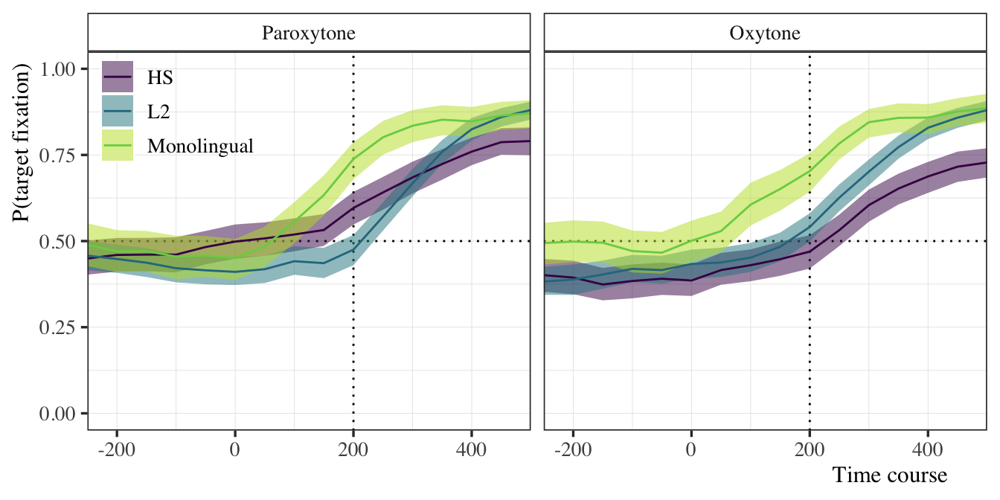
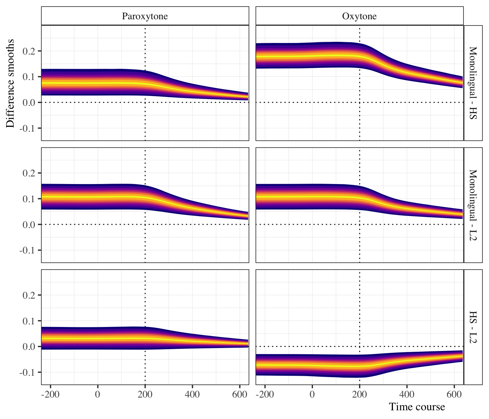
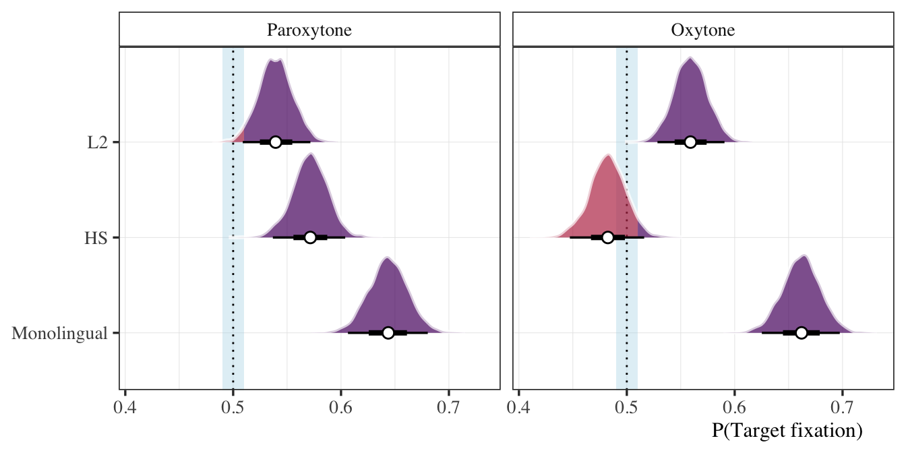

Morphological predictability - HS: 1.2
Summary
Abstract
Summary of analyses for morphosyntactic predictability project.
1 Take-aways
- The two bilingual groups are essentially equivalent regarding proficiency and use.
- Stress matters: Monolinguals always predict, bilinguals do to some degree, but depends on stress (holding use and proficiency constant)
- HL:
- Paroxytone (CANta) (most common): üëç
- Oxytone (canTA) (less common): üëé
- L2:
- Paroxytone (CANta) (most common): üëç
- Oxytone (canTA) (less common): üëç
- HL:
- Group differences
- Monolingual time course different from both bilingual groups (they predict sooner) regardless of stress
- HL and L2ers have essentially the same time course with paroxytonic stress, but L2 course is slightly delayed in comparison, the opposite is true for oxytonic stress, i.e., the HL time course is slightly delayed
- L2ers predict more than HL with (less common) oxytonic stress pattern (but still not a lot)
- Proficiency, use, and prediction
- HL
- High use individuals always predict in paroxytone condition.
- As use decreases, so does prediction
- Marginalizing over stress, prediction is pretty good across the board
- For oxytonic stress condition, only high use/high prof individuals predict
- Unexplained weirdness… in oxytone condition low prof/low use predicts higher (not sure about this)
- L2
- Generally use is less important
- Higher proficiency associated with higher prediction
- Lowest overall prediction in paroxytone condition
- HL
2 Key plots
2.1 Prof/use check
See Proficiency/use cleaup and EDA for full details. Eight of 130 participants removed to make use more comparable between groups.
2.2 Eye-tracking: Raw data

2.3 Eye-tracking: Group model (no prof/use)
2.3.1 Time course: GAMMs


2.3.2 Prediction at target offset

2.3.3 Estimated marginal slopes at target offset

2.4 Bilinguals only (prof/use)
2.4.1 Time course: GAMMs

2.4.2 Prediction at target offset: ZOIDBERG

3 Write-up
3.1 Method
3.1.1 Lexical stress
Lexical stress (henceforth stress) refers to the relative prominence of one syllable with regard to the others in a given word. Stress is lexically encoded and contrastive in Spanish (‘término’ [ˈteɾ.mi.no], Eng. term; ‘termino’ [teɾ.ˈmi.no], Eng. I finish; ‘terminó’ [teɾ.mi.ˈno], Eng. (s)he finished) and in English (‘produce’ [ˈpɹo.duːs] noun, ‘produce’ [pɹə.ˈduːs] verb), though it is more productive in the former than in the latter. To wit, few stress minimal pairs exist in English that are not semantically related (See Cutler 2012). The primary acoustic correlates of stress are F0, duration, and intensity, though their relative cue-weighting is language-specific (See Gordon and Roettger 2017; Chrabaszcz et al. 2014; Holt and Lotto 2006, among many others). Despite native English speakers’ familiarity with stress, they typically have trouble producing (Bullock and Lord 2003; Lord 2007) and perceiving (Face 2000, 2005, 2006; Ortega-Llebaria, Gu, and Fan 2013; Saalfeld 2012) stress differences in L2 Spanish. A possible explanation might be found in language-specific isochrony (Pike 1945). Whereas English is often described as a ‘stress-timed’ language, i.e., one with relatively constant intervals between stressed syllables, Spanish is typically described as ‘syllable-timed’, i.e., each syllable is perceived as having the same duration. Differences such as these may shape how stress is perceived in each language. In English, for example, unstressed vowel reduction—often present in stress-timed languages—may be sufficient for indicating stress (Cutler 2012; Tremblay, Broersma, and Coughlin 2018), rendering other cues relatively less important for speech perception. As a consequence, native English speakers may have to adjust their cue-weighting strategies when learning Spanish, a language that does not have vowel reduction. Evidence from cross-modal priming studies indeed suggests that stress is processed differently by native listeners in both languages during lexical access (See Soto-Faraco, Sebastián-Gallés, and Cutler 2001; Cooper, Cutler, and Wales 2002). The extant literature suggests that native listeners are tuned in to the relevant acoustic cues of their language and take advantage of them to increase processing efficiency. Unsurprisingly, they use the same cue-weighting strategies when learning an L2, often resulting in difficulties during the early stages of learning (Ingvalson, Holt, and McClelland 2012; Iverson et al. 2003).
3.1.2 Participants
We included data from 122 individuals for analysis. There were 30 monolingual participants, 42 heritage speakers, and 50 adult L2 learners.
The bilingual participants completed language use and proficiency assessments. We fit the use and proficiency data to separate Bayesian linear models to assess potential group differences. In both cases, the response variable, use or proficiency score, was a proportion. Thus, we used the beta distribution for the model likelihood with a logit linking function. The models included regularizing, weakly informative priors.1 We compare the posterior marginal mean difference between groups on both response variables. We established a region of practical equivalence (ROPE) of ±0.1. If, for a given measure, the full range of the 95% highest density interval of the difference estimate falls within the ROPE, we consider there to be compelling evidence that the groups are equivalent. The HL group had an average proficiency score of 0.70 [0.09] compared to the L2 groups’ score of 0.71 [0.14]. The marginal mean difference was 0.02 [−0.03, 0.07] and all of the HDI fell within the ROPE. The probability that the effect was positive was 0.77. Regarding language use, the HL group had an average score of 0.41 [0.15] compared to the L2 groups’ score of 0.38 [0.16]. The marginal mean difference was −0.02 [−0.09, 0.05] and, again, all of the HDI fell within the ROPE. The probability that the effect was negative was 0.72. Taken together, we are confident that the groups do not differ in any meaningful way with regard to use of/proficiency in Spanish. Table 1 provides descriptive statistics and Table 2 summarizes the models.
| Group | n | Proficiency | Use |
|---|---|---|---|
| HL | 42 | 0.70 [0.09] | 0.41 [0.15] |
| L2 | 50 | 0.71 [0.14] | 0.38 [0.16] |
| Metric | Contrast | Estimate | ROPE | PD |
|---|---|---|---|---|
| Proficiency | L2 - HL | 0.02 [−0.03, 0.07] | 1 | 0.77 |
| Use | L2 - HL | −0.02 [−0.09, 0.05] | 1 | 0.72 |
3.1.3 Statistical analyses
3.1.3.1 GAMMS
3.1.3.2 ZOIDBERG
3.2 Results
3.3 References
Bullock, Barbara, and Gillian Lord. 2003. “Analogy as a Learning Tool in Second Language Acquisition.” In Romance Linguistics: Theory and Acquisition, edited by Ana Teresa Pérez-Leroux and Yves Roberge, 244:281–97. John Benjamins Publishing. https://doi.org/10.1075/cilt.244.21bul.
Chrabaszcz, Anna, Matthew Winn, Candise Y Lin, and William J Idsardi. 2014. “Acoustic Cues to Perception of Word Stress by English, Mandarin, and Russian Speakers.” Journal of Speech, Language, and Hearing Research 57 (4): 1468–79. https://doi.org/10.1044/2014_JSLHR-L-13-0279.
Cooper, Nicole, Anne Cutler, and Roger Wales. 2002. “Constraints of Lexical Stress on Lexical Access in English: Evidence from Native and Non-Native Listeners.” Language and Speech 45 (3): 207–28. https://doi.org/10.1177/002383090204500301.
Cutler, Anne. 2012. Native Listening: Language Experience and the Recognition of Spoken Words. MIT Press.
Face, Timothy L. 2000. “The Role of Syllable Weight in the Perception of Spanish Stress.” In Hispanic Linguistics at the Turn of the Millennium, edited by H Campos and E Herburger, 1–13. Sommerville, MA: Cascadilla Proceedings Project.
———. 2005. “Syllable Weight and the Perception of Spanish Stress Placement by Second Language Learners.” Journal of Language and Learning 3: 90–103.
———. 2006. “Cognitive Factors in the Perception of Spanish Stress Placement: Implications for a Model of Speech Perception” 44 (6): 1237–67. https://doi.org/10.1515/LING.2006.040.
Gordon, Matthew, and Timo Roettger. 2017. “Acoustic Correlates of Word Stress: A Cross-Linguistic Survey.” Linguistics Vanguard 3 (1). https://doi.org/10.1515/lingvan-2017-0007.
Holt, Lori L, and Andrew J Lotto. 2006. “Cue Weighting in Auditory Categorization: Implications for First and Second Language Acquisition.” The Journal of the Acoustical Society of America 119 (5): 3059–71. https://doi.org/10.1121/1.2188377.
Ingvalson, Erin M, Lori L Holt, and James L McClelland. 2012. “Can Native Japanese Listeners Learn to Differentiate /r-l/ on the Basis of F3 Onset Frequency?” Bilingualism: Language and Cognition 15 (2): 255–74. https://doi.org/10.1017/S1366728911000447.
Iverson, Paul, Patricia K Kuhl, Reiko Akahane-Yamada, Eugen Diesch, Andreas Kettermann, Claudia Siebert, et al. 2003. “A Perceptual Interference Account of Acquisition Difficulties for Non-Native Phonemes.” Cognition 87 (1): B47–57. https://doi.org/10.1016/s0010-0277(02)00198-1.
Lord, Gillian. 2007. “The Role of the Lexicon in Learning Second Language Stress Patterns.” Applied Language Learning 17 (1-2): 1–14.
Ortega-Llebaria, Marta, Hong Gu, and Jieyu Fan. 2013. “English Speakers’ Perception of Spanish Lexical Stress: Context-Driven L2 Stress Perception.” Journal of Phonetics 41 (3-4): 186–97. https://doi.org/10.1016/j.wocn.2013.01.006.
Pike, Kenneth L. 1945. “The Intonation of American English.”
Saalfeld, Anita K. 2012. “Teaching L2 Spanish Stress.” Foreign Language Annals 45 (2): 283–303. https://doi.org/10.1111/j.1944-9720.2012.01191.x.
Soto-Faraco, Salvador, Núria Sebastián-Gallés, and Anne Cutler. 2001. “Segmental and Suprasegmental Mismatch in Lexical Access.” Journal of Memory and Language 45: 412–32. https://doi.org/10.1006/jmla.2000.2783.
Tremblay, Annie, Mirjam Broersma, and Caitlin E Coughlin. 2018. “The Functional Weight of a Prosodic Cue in the Native Language Predicts the Learning of Speech Segmentation in a Second Language.” Bilingualism: Language and Cognition 21 (3): 640–52. https://doi.org/10.1017/S136672891700030X.
Footnotes
See Proficiency/use cleaup and EDA for full details.↩︎